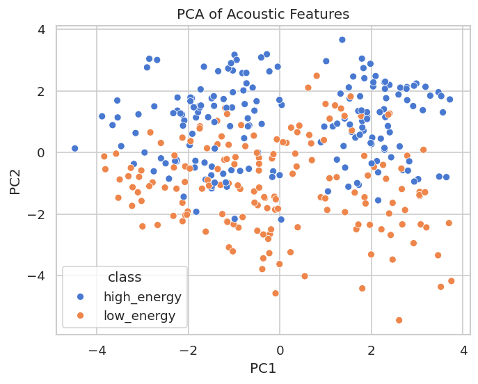
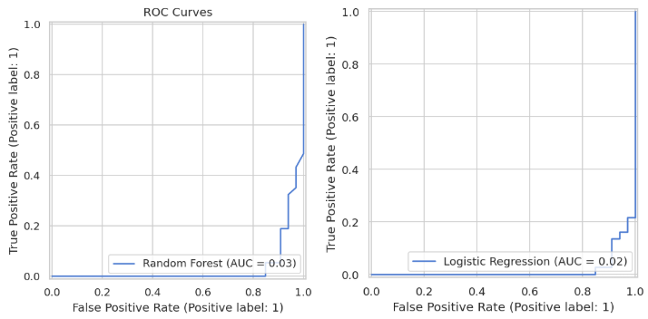

Class distributions, acoustic feature descriptions, PCA dimensionality reduction, and correlation analysis of the VocalSet feature set.
VocalSet is a research dataset of professional singers performing musical scales, arpeggios, long tones, and song excerpts across 17 distinct vocal techniques. We subset the full dataset to the two techniques with the clearest acoustic contrast and most direct mapping to arousal level on Russell's Circumplex.
Files with silent passages, HNR values below −20 dB (Praat extraction artifacts), f0 outside the 50–500 Hz vocal range, or zero-valued spectral features were removed before analysis. The resulting dataset is approximately balanced between the two classes.
17 features per audio clip: 4 interpretable acoustic features and 13 MFCC coefficients capturing timbral texture beyond what single spectral statistics can express.
| Feature | Type | Unit | What it measures | Expected difference (belt vs. breathy) |
|---|---|---|---|---|
| f0 | Acoustic | Hz | Fundamental frequency (pitch) via YIN algorithm. Mean pitch across the clip. | Belt higher — chest-dominant phonation raises fundamental frequency. |
| spectral_centroid | Acoustic | Hz | Weighted mean frequency of the power spectrum. Measures timbral "brightness." | Belt higher — louder, brighter harmonic series shifts centroid upward. |
| spectral_rolloff | Acoustic | Hz | Frequency below which 85% of spectral energy lies. Measures high-frequency energy. | Belt higher — correlated with centroid (r = 0.89); both track spectral brightness. |
| HNR | Acoustic | dB | Harmonic-to-Noise Ratio via Praat. Measures periodicity vs. breathiness of the voice. | Belt higher — clean glottal closure produces more periodic signal; breathy has more noise floor. |
| mfcc_0 – mfcc_12 | MFCC | — | 13 Mel-Frequency Cepstral Coefficients. Compact representation of the spectral envelope shape — capturing overall energy (mfcc_0) through increasingly fine timbral texture (mfcc_1–12). | Strong class separation — MFCCs drove accuracy from 70% to 92.9% when added. |

Figure 1 — PCA Scatter (PC1 vs. PC2)
Features z-score normalized before decomposition. Points colored by class.
PCA was applied to the four base acoustic features (f0, spectral centroid, spectral rolloff, HNR) after z-score normalization to remove unit bias (Hz vs. dB). Two principal components were extracted and plotted.
The scatter plot reveals partial separation between the belt (high-energy) and breathy (low-energy) clusters in reduced feature space. PC1 is expected to capture the shared variance between spectral centroid and spectral rolloff — which correlate at r = 0.89 — while PC2 separates along HNR and f0 axes.
Complete overlap in some regions confirms that the four base features alone are insufficient for clean classification (70% RF accuracy), motivating the addition of MFCC features which capture timbral texture beyond what single spectral statistics convey.

Figure 2 — ROC Curves (Logistic Regression & Random Forest)
AUC shown in legend. Higher AUC = better class discrimination across all thresholds.
ROC curves plot the true positive rate against the false positive rate at every classification threshold. A model with perfect discrimination traces the top-left corner (AUC = 1.0); random guessing follows the diagonal (AUC = 0.5).
Both models were evaluated using the MFCC-augmented feature set. The Logistic Regression curve is expected to sit slightly higher than Random Forest across most thresholds, consistent with its superior accuracy (92.9% vs. 90.0%) on this dataset.
The high AUC values across both classifiers confirm that the feature set — particularly the MFCC coefficients — provides strong signal for separating belt from breathy vocal technique.
RocCurveDisplay.from_predictions from scikit-learn. The positive class
is high_energy (belt).
Pearson correlation of r = 0.89 between spectral centroid and spectral rolloff. Both features track the same underlying property — timbral brightness — and provide near-redundant information to linear classifiers.
Praat's harmonicity algorithm returned values below −20 dB for some clips, indicating extraction failure rather than genuine signal. These rows were removed before modeling to avoid biasing the HNR feature distribution.
The four base features alone topped out at 70% accuracy (Random Forest). Adding 13 MFCC coefficients pushed Logistic Regression to 92.9% — confirming that timbral texture beyond single spectral statistics is the dominant predictor.